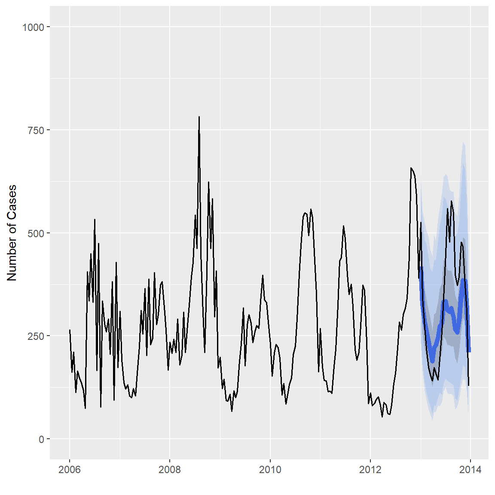

ForecastFramework is an object-oriented R package that standardizes forecasting models. The package uses the R6 class implementation to design an object-oriented framework for building forecasting models for spatial time-series data. The central goals of the ForecastFramework package are to enable rapid model development while standardizing and simplifying implementation and performance evaluation.
ForecastFramework is the primary modeling tool used at the Reich Lab at the University of Massachusetts Amherst. Specifically, it is the modeling format used in the Predict the District Challenge.
The following diagram illustrates the flow of a ForecastFramework Modeling process:

ForecastFramework was created by Joshua Kaminsky of the Infectious Disease Dynamics Group at Johns Hopkins University.
ForecastFramework is an open source R package hosted on CRAN and Github.
To install this package, either run the following commands in your Rstudio console:
install.packages('ForecastFramework')Or:
require(devtools)
devtools::install_github('HopkinsIDD/ForecastFramework')Before creating your own ForecastFramework models, let’s dive deeper into the forecasting process with ForecastFramework.
The ForecastFramework model is comprised of three parts: the data, the model, and the prediction.
These three areas of ForecastFramework make up the ForecastFramework pipeline: preprocessing, defining inputs, fitting, and predicting: 
Each of the subsequent vignettes looks into a part of this process. However, the preprocesing stage will be included in the Defining Inputs Vignette.
Defining Inputs: Incidence MatrixFitting and Predicting: SARIMAEvaluating Complex Models: SARIMATD vs. GAMCreating your own Model: SARIMATDForecastFramework makes it easy to quickly manipulate forecasting data. To do this, create an object from a class called IncidenceMatrix. This vignette describes how to create an IncidenceMatrix and some key fields and methods relating to
ForecastFramework and R6library(R6)
library(ForecastFramework)data_matrix <- matrix(1:9,3,3)
print(data_matrix)## [,1] [,2] [,3]
## [1,] 1 4 7
## [2,] 2 5 8
## [3,] 3 6 9data_object <- IncidenceMatrix$new(data_matrix)The IncidenceMatrix class has several fields that can be helpful for data preprocessing.
$mat show data in matrix form$nrow number of rows$ncol number of columns$colData columns headers$rowData row names$cellData list of cell metadata$cnames names of matrix columns$rnames names of matrix rows$metaData any data not part of main matrixIn object oriented programming, a ‘method’ is a function for a class. In this case, the following methods are functions that are applied to IncidenceMatrix.
$addColumns(n) add n columns to matrix$addRows(n) add n rows to matrix$diff(n) difference between each column and lag n columns to the left$lag(n) lag each columns by n$head(x,y) show x columns/rows from the top (y=1 for columns, 2 for rows)$tail(x,y) show x columns/rows from the bottom (y=1 for columns, 2 for rows)$scale(functin(x){}) scale the matrix by some function$subset(rows=x,cols=y) take a subset of the matrix by x rows and y columnsLet’s apply some of the example functions from above to our data_object.
$mat show data in matrix form:
data_object$mat## [,1] [,2] [,3]
## [1,] 1 4 7
## [2,] 2 5 8
## [3,] 3 6 9$nrow number of rows in the matrix:
data_object$nrow## [1] 3$ncol number of columns in the matrix:
data_object$ncol## [1] 3$colData Edit or the column names:
data_object$colData <- list(1:3) # Initialize how many columns headers
data_object$colData <- list(c("A","B","C"))
data_object$colData## [[1]]
## [1] "A" "B" "C"$addColumns Edit or the column names:
data_object$addColumns(2)
data_object$colData## [[1]]
## [1] "A" "B" "C" NA NAdata_object$mat## [,1] [,2] [,3] [,4] [,5]
## [1,] 1 4 7 NA NA
## [2,] 2 5 8 NA NA
## [3,] 3 6 9 NA NAThis demonstration investigate the usage of models with ForecastFramework. For more information on the SARIMA Model itself, check out: https://github.com/reichlab/thai-dengue-district-challenge/blob/master/doc/ff-intro.Rmd.
First you must import all the required libraries. Note that ForecastFramework doesn’t requre dplyr or ggplot2, but they will be used to make a figure at the end of the demo.
require(ForecastFramework)
require(R6)
require(forecast)
require(dplyr)
require(ggplot2)
# Source R6 Files
source('../models/ContestModel.R')
source('../models/SARIMAModel.R')Now it is time to fit your SARIMA Model! ForecastFramework makes this easy.
In this SARIMA model, simulation is used with ::forecast auto.arima(). So we must define the number of simulations to use, nsim. We also need to define the seasonal periodicity of our data, or the period parameter. For Dengue forecasting, we know the periodicity is 26, because the data is biweekly. once we define these parameters, they can be passed into the SARIMAModel() class generator to create a new sarima_model class.
nsim <- 1000 # Number of SARIMA simulations
sarima_model <- SARIMAModel$new(period = 26, nsim = nsim)To import data from a local csv, use the read.csv() command. In this example, the date_sick field is imported as a wrong datatype, so it must be converted to a date value with a couple of transformations. Then, the data is stored as an IncidenceMatrix(). An incidence matrix represents spatial time-series data in a matrix with one row per location and one column per time. To do this, another series of transformations are made. IncidenceMatrix is the preferred input for ForecastFramework Models.
# training data for province 10, years 2006 - 2012
dat <- read.csv('../data/province-biweek-counts-training.csv')
dat$date_sick <- as.Date(strptime(dat$date_sick,"%m/%d/%Y")) # convert to date values
inc <- IncidenceMatrix$new(1+reshape2::acast(dat,province~date_sick,value.var='cases'))
print(inc$mat[,0:10])## 2006-01-01 2006-01-15 2006-01-29 2006-02-12 2006-02-26 2006-03-12
## 266 163 212 114 166 147
## 2006-03-26 2006-04-09 2006-04-23 2006-05-07
## 138 118 75 407Typically, all the provinces in Thailand would be fit separately and have different forecasts. For the scope of this demo, we are only fitting and forecasting Province 10. The SARIMAModel method requires the user to specify which province to model, in this case, we are modeling the first (and only) province in the dataset.
# define how many provinces to model
# this demo only has data for one province: Province 10
prov_nums <- 1
nmodels <- length(prov_nums)
sarima_model$fit(inc$subset(rows = prov_nums, mutate = FALSE))Before forecasting, you must specify how many periods ahead you would like to forecast. This is defined by the steps parameter. Then, you forecast with the sarima_model$forecast() method. This model will forecast one year into the future (26 biweeks).
# define how many provinces to model
# this demo only has data for one province: Province 10
steps <- 26 # forecast ahead 26 biweeksThen, use the built-in $forecast() function to create your forecasts. This creates a new R6 object with your forecasts and many other useful built-in functions. Be sure to check out the Evaluation section for usage of the Forecasting function.
forecast_X <- sarima_model$forecast(steps = steps)To view the new forecasting data in matrix form, execute the following command:
forecast_X$data$mat## 1 2 3 4 5 6 7 8
## 10 432.6677 296.4042 310.3366 270.4059 121.5812 199.9582 113.5805 164.347
## 9 10 11 12 13 14 15 16
## 10 163.6845 116.8311 207.0732 161.3201 226.2834 184.8051 133.1265 208.9886
## 17 18 19 20 21 22 23 24
## 10 119.229 138.6334 213.9226 331.4624 291.5847 439.2902 605.2553 586.8358
## 25 26
## 10 412.0543 308.2627Lets convert the forecast matrix to a dataframe in R for easy manipulation:
# converting predictions to a dataframe to use dplyr
preds_df <- data.frame(as.table(t(forecast_X$data$mat)))To include the date_sick in the forecast_X$data$mat output, map the forecast to its predicted dates is to create a new data frame with the data from the missing year. Then, we will combine the output in forecast_X$data with the correct biweek dates.
# converting predictions to a dataframe to use dplyr
# import testing dataset which has 2013 data
data_X <- read.csv('../data/province-biweek-counts-testing.csv')
data_X$date_sick <- as.Date(strptime(data_X$date_sick,"%m/%d/%Y")) # convert to date values
preds_dates <- data_X %>%
filter(year == 2013)
# add prediction dates to original forecast
preds_df[["date_sick"]] <-as.Date(preds_dates$date_sick, format = "%d-%m-%Y")Now, we can add the forecast to the preds_df. Notice the $median() and $quantile() functions accompanied with $mat will produce matricies with the prediction medians and quantiles, respectively.
preds_df <- preds_df %>%
mutate(
pred_total_cases = as.vector(forecast_X$median()$mat),
pred_95_lb = as.vector(forecast_X$quantile(0.025)$mat),
pred_95_ub = as.vector(forecast_X$quantile(0.975)$mat),
pred_80_lb = as.vector(forecast_X$quantile(0.05)$mat),
pred_80_ub = as.vector(forecast_X$quantile(0.95)$mat),
pred_50_lb = as.vector(forecast_X$quantile(0.25)$mat),
pred_50_ub = as.vector(forecast_X$quantile(0.75)$mat)
)
print(head(preds_df,5)) # Print the first 5 rows## Var1 Var2 Freq date_sick pred_total_cases pred_95_lb pred_95_ub
## 1 1 10 432.6677 2013-01-01 417.9925 231.04111 640.5341
## 2 2 10 296.4042 2013-01-15 323.1909 163.53394 553.4607
## 3 3 10 310.3366 2013-01-29 283.2626 116.57750 526.7948
## 4 4 10 270.4059 2013-02-12 264.4122 95.21935 505.5675
## 5 5 10 121.5812 2013-02-26 238.0792 72.05204 491.2798
## pred_80_lb pred_80_ub pred_50_lb pred_50_ub
## 1 249.3704 606.0329 353.5039 484.9692
## 2 180.6548 520.9004 254.3539 394.2651
## 3 137.9706 483.1986 218.4664 366.3415
## 4 115.2515 472.8115 195.3376 339.3977
## 5 92.0370 440.3249 171.9085 313.0449Finally, you are able to plot your SARIMA Forecast! Lets use ggplot2 to create a cool plot.
ggplot() +
geom_ribbon(
mapping = aes(x = date_sick, ymin = pred_95_lb, ymax = pred_95_ub),
fill = "cornflowerblue",
alpha = 0.2,
data = preds_df) +
geom_ribbon(
mapping = aes(x = date_sick, ymin = pred_80_lb, ymax = pred_80_ub),
fill = "cornflowerblue",
alpha = 0.2,
data = preds_df) +
geom_ribbon(
mapping = aes(x = date_sick, ymin = pred_50_lb, ymax = pred_50_ub),
alpha = 0.2,
data = preds_df) +
geom_line(
mapping = aes(x = date_sick, y = pred_total_cases),
color = "royalblue",
size = 2,
data = preds_df) +
geom_line(mapping = aes(x = date_sick, y = cases),
size=0.7,
data = data_X) +
xlab("") + ylab("Number of Cases") +
coord_cartesian(ylim = c(0, 1000))